12.UI：添加工具栏按钮
Qt框架提供丰富的功能库，且在跨平台兼容方面表现出色，使得适配兼容不同的操作系统变得更简单，降低开发和维护成本。
本节课我们来近距离体验和感受使用QT开发UI的过程。
12.1.将图标图片添加到资源文件中
将line.png等图片添加到glviewer.qrc中，便于接下来作为工具按钮图标使用。
<RCC>
<qresource prefix="/">
<file>viewcube.png</file>
<file>rotateLabel.png</file>
<file>line.png</file>
<file>arc.png</file>
<file>arc2.png</file>
<file>circle.png</file>
<file>rectangle.png</file>
</qresource>
</RCC>
12.2.创建绘制线的按钮
1) 打开项目
首先，我们使用打开Qt Creator，
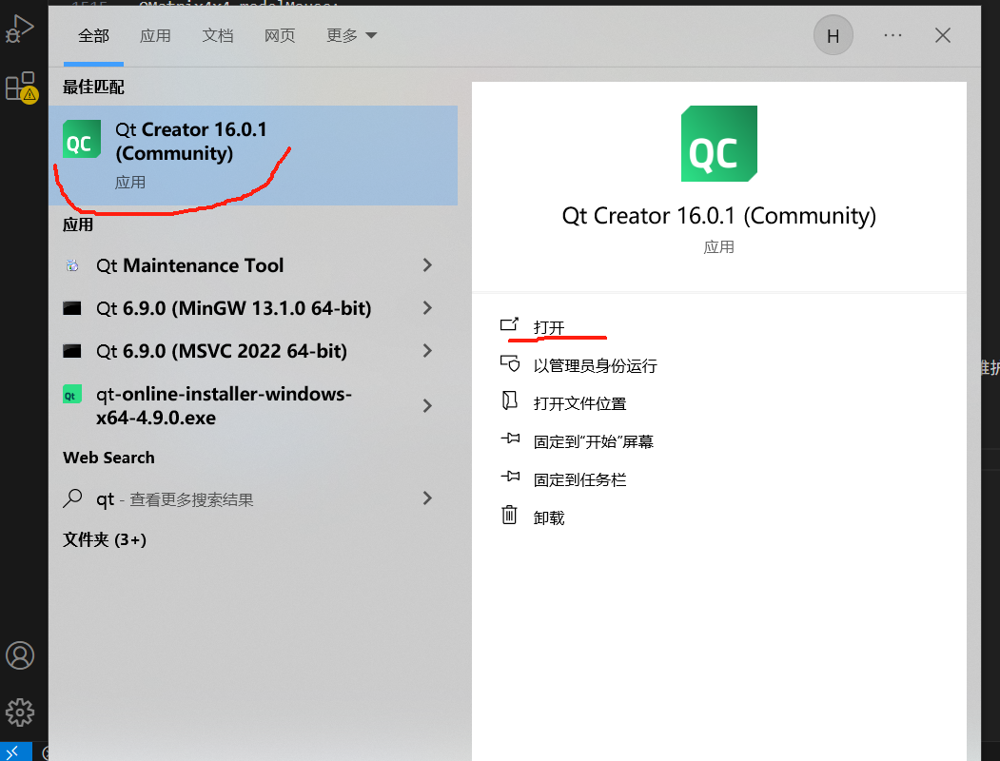Qt Creator" width="400" align="middle" style="display: block; margin-left: auto; margin-right: auto;"/>
打开项目，选择项目下的根cmakelists文件，打开，此后需要等待几秒时间待配置完成，
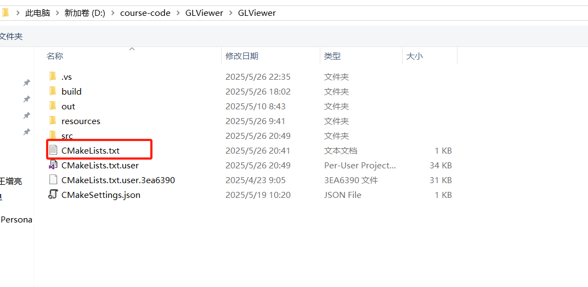
2) 添加菜单项
我们双击左侧项目文件树中glwindow.ui文件，打开UI界面，
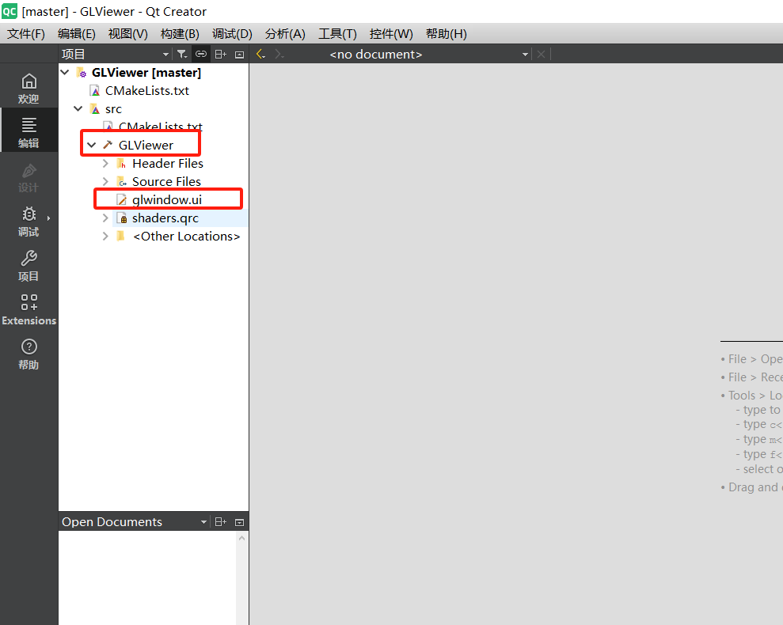
此时我们先添加菜单栏项，双击在这里输入，输入Draw，按Enter键完成
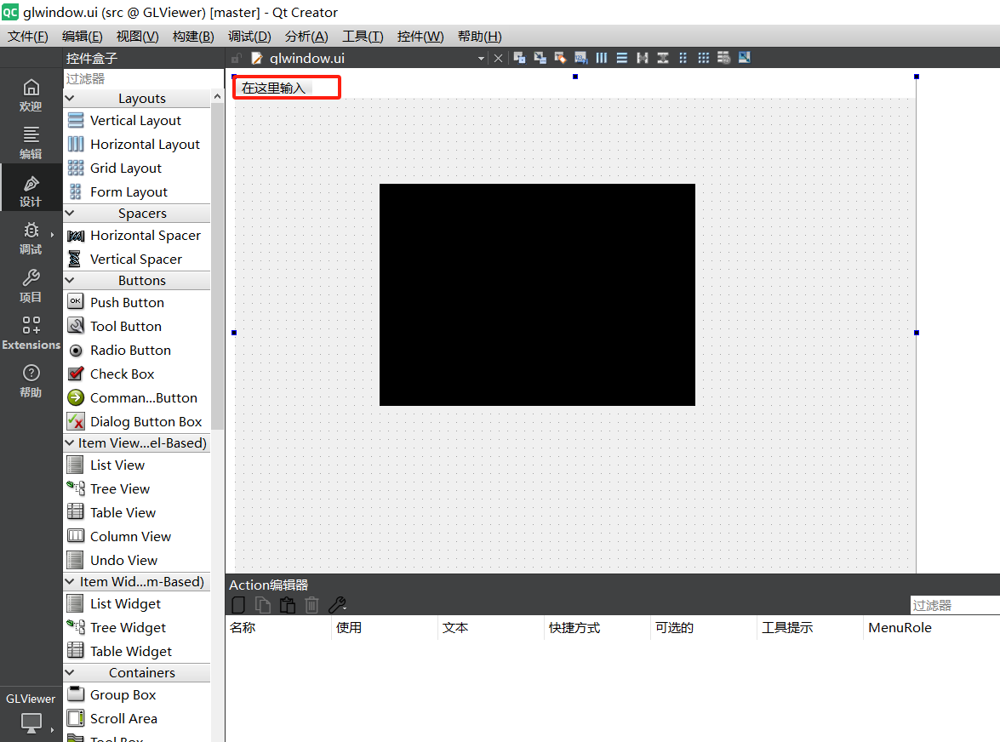在这里输入" width="400" align="middle" style="display: block; margin-left: auto; margin-right: auto;"/>
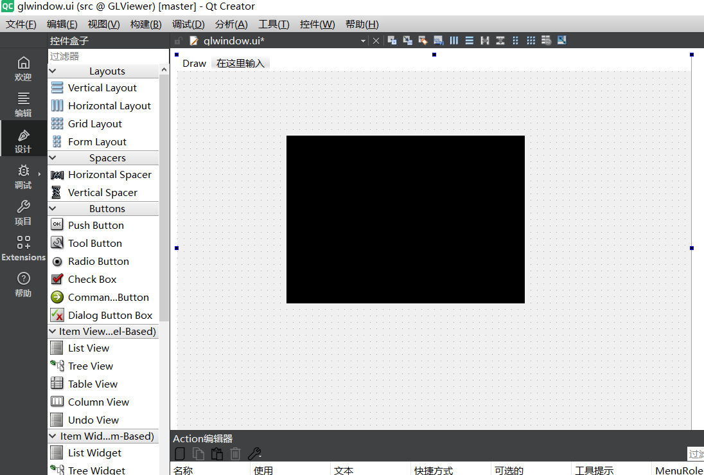Draw" width="400" align="middle" style="display: block; margin-left: auto; margin-right: auto;"/>
3) 添加工具栏
首先，我们添加工具栏，空白处右键，选择添加工具栏，之后空白工具栏出现在界面上，
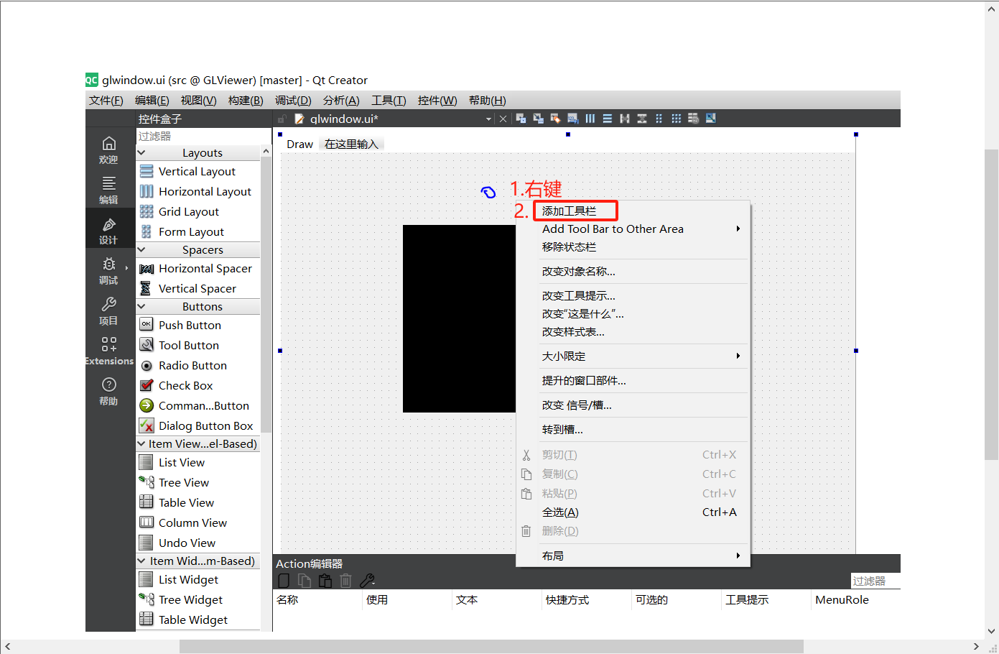
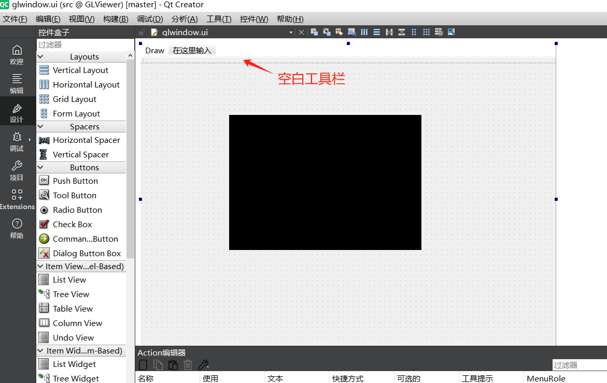
4) 添加工具按钮
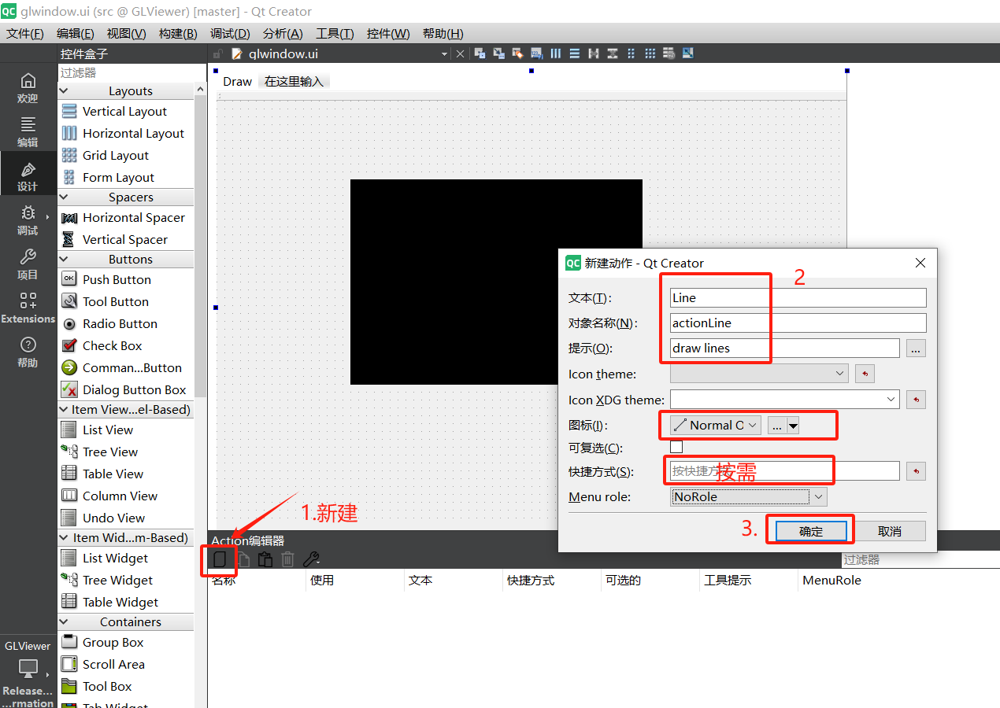
按上述图片步骤创建actionLine，然后左键按住拖动到工具栏上，松开按键，即添加到工具栏了，
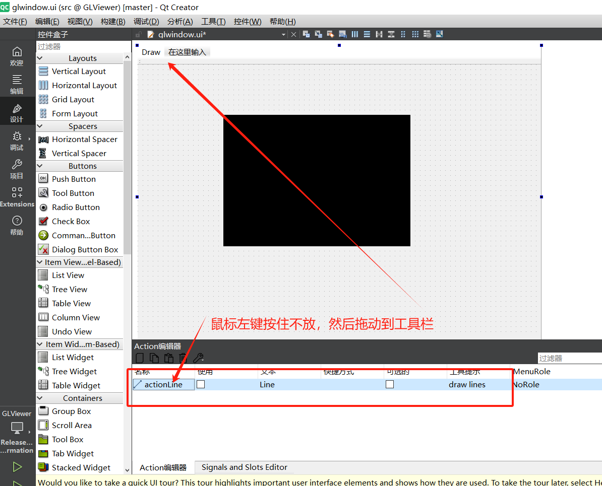
还可以在工具栏上右键，选择添加分隔符，这样按钮右侧添加了竖向分隔符，排列更美观~
12.3.监控并绑定点击事件
注意可以有多种方式实现绑定点击事件，如在Action编辑器的actionLine行右键，转到槽，选择triggerred，确定，即自动创建函数并绑定点击事件，然后填充函数实现即可。
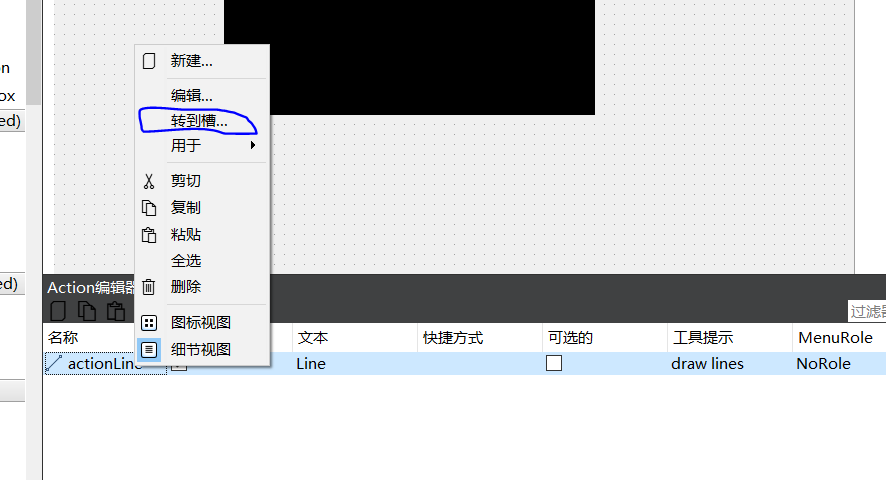
本文不采用此种方式，本文采用更加灵活可控的代码实现方式，如下。
Important
对了，还是构建运行下，看看是否有错误，正常的话是没有错误的（苦笑）
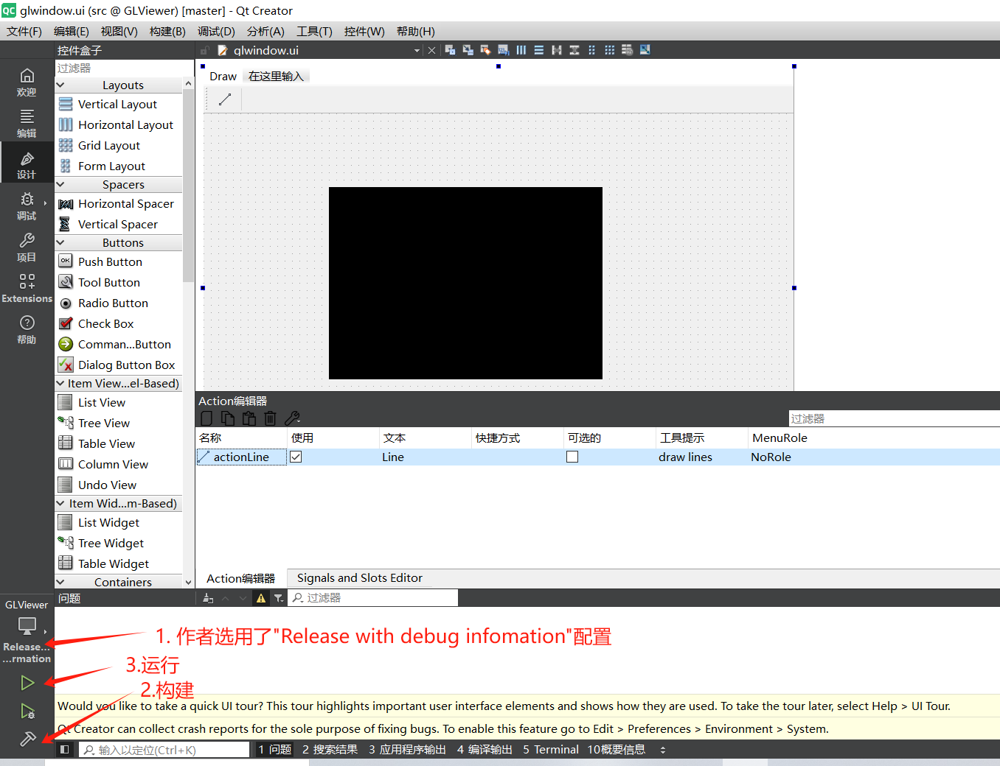
还是习惯于使用Visual Studio 2022，打开VS2022，在class glwindow中添加函数，
void GLWindow::createActions(void)
{
connect(ui->actionLine, SIGNAL(triggered()), ui->openGLWidget, SLOT(drawLine()));
}
在class glview中添加函数，
void GLView::drawLine()
{
QMessageBox::information(NULL, "Title", "Content", QMessageBox::Yes | QMessageBox::No, QMessageBox::Yes);
}
- 注意添加头文件
#include <QMessageBox>; - 注意在
glview.h中drawLine函数声明需要放在public slots:后面，因为此函数需要被事件绑定；
public slots:
void drawLine();
记得在glwindow构造函数中调用createActions。
12.4.构建运行
如果一切正常，或者遇到的问题被排查解决，那么运行后可以看到如下效果。
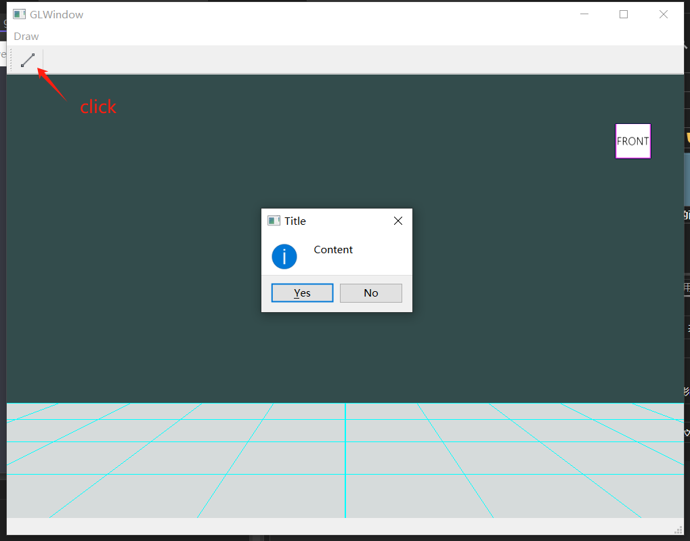
提示
现在再来操作操作，看起来有点雏形的样子了~
12.5.添加到菜单项中
在本节课程我们添加了菜单项Draw和工具栏按钮Line，虽然工具栏按钮可以点击触发事件，调用绑定的函数了，但菜单项Draw下是空白的，我们尝试把Line加进去~
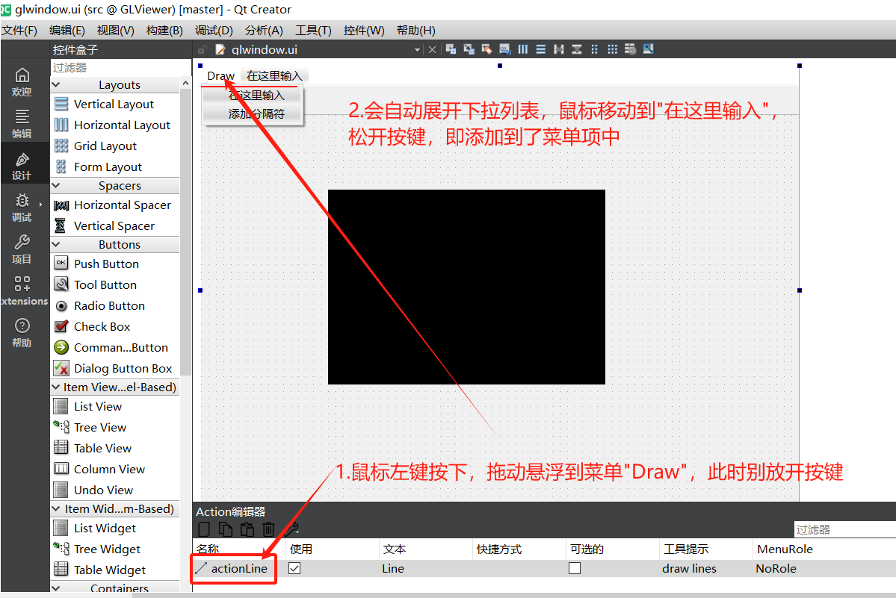
好了，Line出现在菜单项Draw的下拉列表中了。
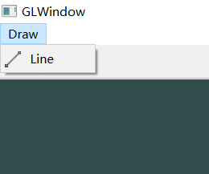